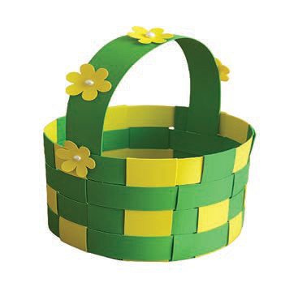

Utengenezaji wa vikapu kwa kutumia makunzi mbalimbali
Kutengeneza vikapu kwa kutumia makunzi ni sanaa muhimu sana kwa jamii. Vikapu vinavyotengenezwa vinaweza kuuzwa sokoni kwa matumizi mbalimbali. Kuna makunzi ya aina nyingi yanayoweza kutumika kutengenezea vikapu, kama vile karatasi, kamba za katani, nyuzi za nailoni na ukindu.
Makunzi ya karatasi
Haya ni rahisi kupatikana na yanatumika kutengenezea vikapu kwa ajili ya kubebea vitu rahisi na mapambo. Kielelezo namba 16 kinaonesha kikapu kilichotengenezwa kwa makunzi ya karatasi.

Hatua za kutengeneza vikapu kwa kutumia makunzi ya karatasi
Andaa makunzi ya karatasi. Kata karatasi katika vipande virefu vyenye upana wa takriban sentimita 1 hadi 2. Tumia penseli au fimbo nyembamba kuviringisha kila kipande cha karatasi hadi kiwe kama bomba;
Unda msingi wa kikapu. Chukua makunzi nane hadi kumi na uyapange kwa umbo la nyota (yakiwa yamevuka katikati). Tumia gundi kuunganisha makunzi yote katikati, na subiri yakauke;
Anza kusuka ukuta wa kikapu. Chukua mkunjo mmoja wa karatasi na uanze kuuzungusha kwenye makunzi ya msingi. Suka kwa kuingiza mkunjo juu na chini ya makunzi ya msingi kwa mtiririko. Endelea kusuka ukizunguka, ukihakikisha kila mduara wa kusuka unakuwa thabiti na karibu;
Ongeza ukubwa wa kikapu. Unapofikia mwisho wa mkunjo wa karatasi, ongeza mkunjo mwingine kwa gundi na uendelee kusuka. Rudia mchakato huu hadi ukuta wa kikapu ufikie urefu unaotakiwa;
Malizia sehemu ya juu ya kikapu. Punguza makunzi ya msingi kwa mkasi